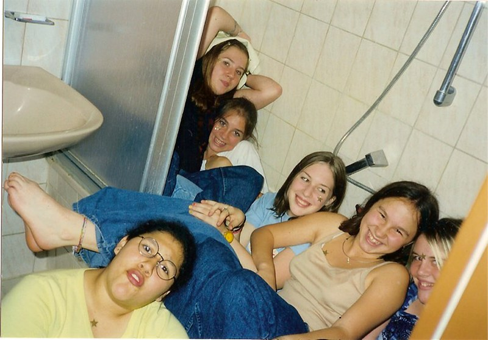
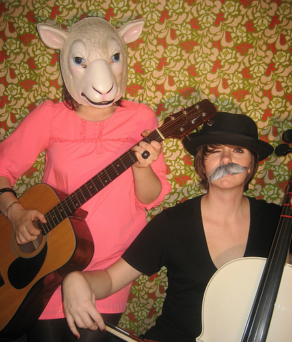
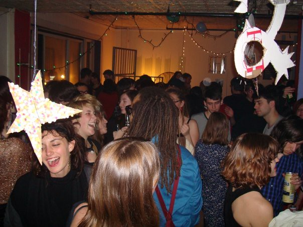
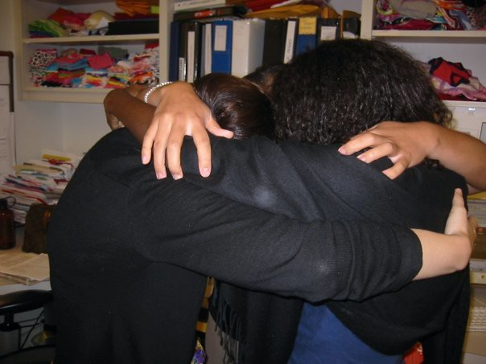
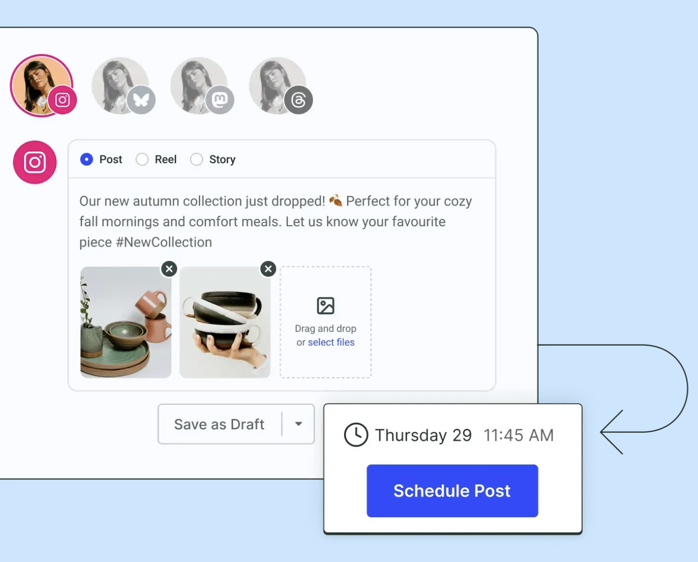
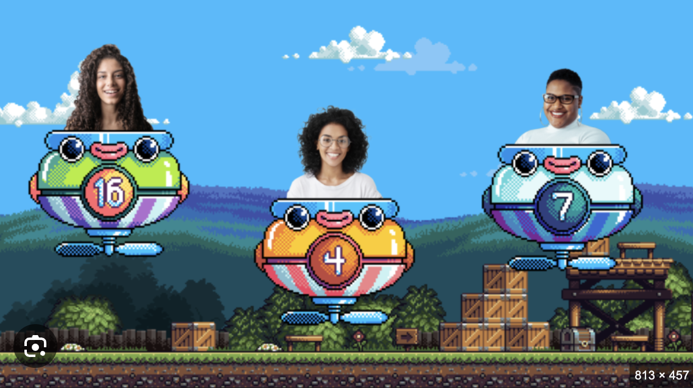
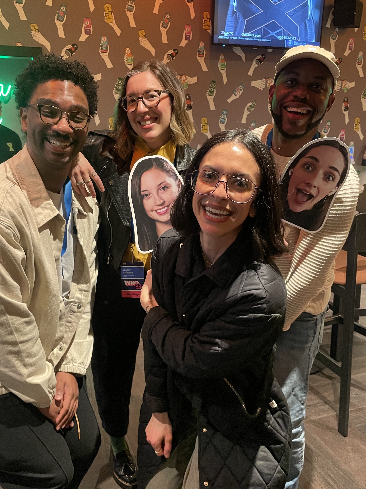

Born in Germany
I was born in Landstuhl, Germany and spent my first two years of life there.
11 Moves in 17 Years
Why I struggle to answer the question, "Where are you from?". Repeatedly making and leaving friends was difficult, but I got to travel the country and see the world.
Being the outsider made me a skilled observer and taught me empathy.

High School
I attended 3: in Germany, Arizona, and Florida. I was a good student, taking on AP classes and regularly showing up on honor rolls.
I spent my free time playing guitar, collaging, thrifting & upcycling clothes, and DIY screenprinting. I also worked part-time: first in food service, then retail.
IMO everyone should be required to work in the service industry!

College
A scholarship got me a (nearly) free ride to Florida State University. I struggled with what to focus on and would've benefitted from a gap year, but that was a non-starter in my family.
I started out declaring International Relations, then switched to Apparel Design & Technology with a minor in German.

I ♥ NYC
I moved to Brooklyn, NY immediately after graduating and spent 13 wonderful years there. It's what now feels like "home" to me.
I once lived in a loft (seen above) with 8 people +1 cat under the JMZ train.

Apparel production
I secured my first job as a Color Analyst & Production Coordinator to pay the bills, then set about discovering what I really wanted to do.
My company had a graphic design team and I started teaching myself Adobe Illustrator and producing work. When a role opened up, I made my case and got the job. I then hustled my way from junior designer to Assistant Art Director.
I loved the creative + technical work, but eventually grew tired of year-long production cycles and started teaching myself to code.
The Pivot
I joined a small (10 person) startup in Manhattan after making my case once more: here's what I can do, and here's everything I'm doing to figure the rest out—throw me in.
I delivered design work, wrote front-end code (vanilla HTML, Sass, JS and used frameworks like Angular), and filled PM gaps (before knowing this was a role).

Buffer
After 4 years in my previous role, I joined this globally distributed, async-first team to lead design on its flagship product, Publish. I led a redesign of the core calendar experience, contributed to the design system, and shaped how Design operated.
"Radical transparency" is one of Buffer's core values, which continues to be a guiding principle for my work.

mmhmm
Yes, that is (was) the actual name of the company. They ultimately rebranded to Airtime. Think Loom & Zoom, but more creative.
Webflow
I joined to work on a product I admired and to sharpen my craft. Am I just a big fish in a small pond, or can I hang with the big (design) dogs?
Almost 4 years in I've grown in innumerable ways. The company has more than doubled in size and ARR, and grown from a website builder to a multi-product platform.
Webflow has indeed sharpened my craft, shaped my leadership style, and expanded my capacity for systems thinking.

Leadership
After many years as an IC I transitioned to a formal leadership role, leading design on the Collaborate pillar and managing a team of 5.
We've delivered realtime collaboration, granular access controls, publishing workflows, and are cooking up an exciting new agentic 0-1 product.
I've had the distinct pleasure of working with this exceptional group of humans.
Designing & tinkering
This throughline in my life persists, and the recent explosion of new tools and workflows has injected new energy into my work.
In front of my computer, I'm building with Claude Code + Cursor, experimenting with AI agents, and soaking up podcasts, videos, and articles to stretch my thinking.
Outside of technical pursuits, I love spending time on slow analog creation: knitting, sewing, pottery, writing, and papier mache.